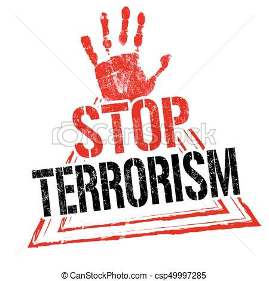
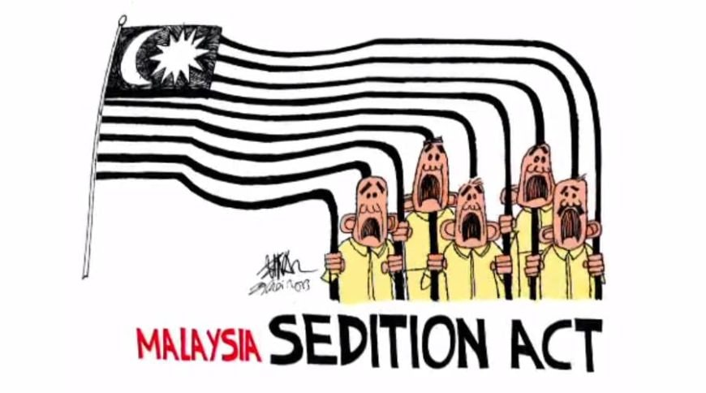
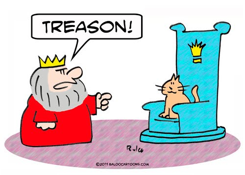

CRIMES AGAINST THE GOVERNMENT
Home || Crimes against Individuals || Crimes against Property || Crime against Businesses || Crimes against Government || Future Transformation || Reference List|| About Creator
Three types of crimes against individuals include:
- Terrorism
- Sedition
- Treason
Terrorism
Definition of terrorism according to Collins Dictionary:
Terrorism is the use of violence, especially murder and bombing, in order to achieve political aims or to force a government to do something.
Examples of terrorism crimes in the past with the absence of technology
Terrorism is not a 21st century phenomenon and has roots in early resistance and political movements. The Sicarii were an early Jewish terrorist
organization founded in the first century AD with the goal of overthrowing the Romans in the Middle East. Judas of Galilee, leader of the Zealots
and a influence on the Sicarii, believed that the Jews should be ruled by God alone and that armed resistance was necessary (Roser, Nagdy & Ritchie, 2018).

How have technology evolved the way terrorism is committed?
Cyberterrorism is defined as the use of the Internet as a way to launch an attack (Kaplan, 2009). The internet has allowed terrorist organizations to
communicate their message and aims to the world, allowing them to recruit new members, coordinate global attacks and evade surveillance. The terrorist
group known as the Islamic State (ISIS) are one of the first to use the power of the internet and social media (Roser, Nagdy & Ritchie, 2018).
What are actions/responses that may mitigate the effect of technology on terrorism ?
As detailed by Beggs, & Butler (2004), current technologies such as firewalls, password protection systems, key encryption (e.g 3DES, RSA), stenography
and intrusion detection systems are being use to mitigate the effect of cyberterrorism.
How can hacking be mitigated with the use of technology?
Homemade bombs, are the weapons for terrorists and greatest cause of casualties in terrorist attacks. To address this threat, North Atlantic Treaty
Organization (NATO) is developing a variety of technologies to cause the bombs to malfunction (Billingslea, 2004). Other technologies such critical
infrastructure inspection management system (CIIMS) allows the government to conduct surveillance which can send and receive real-time information
about activities on the ground help to prevent terrorist attacks (Crawford, 2011).
Sedition
Definition of sedition according to Collins Dictionary:
Sedition is speech, writing, or behaviour intended to encourage people to fight against or oppose the government.
Examples of sedition crimes in the past with the absence of technology
Pedro Albizu Campos, was convicted of sedition in 1937 and jailed for 10 years for attempting to overthrow the US government. He and others had been
active members of the Nationalist Party, which was aimed at gaining independence through force ("Sedition," n.d).

How have technology evolved the way sedition is committed?
Sedition groups such as ISIS are known for using online, end-to-end messaging applications such as Telegram and WhatsApp. These apps are not only widely
used, but are also heavily encrypted, making their conversations more secure and protected (Acolola, 2017).
What are actions/responses that may mitigate the effect of technology on sedition ?
Actions that may be taken to mitigate the effect of this is by monitoring social media and other platforms to track sedition acts or to determine if what
is being communicated is an act of sedition.
How can sedition be mitigated with the use of technology?
Surveillance cameras can be used to mitigate sedition. Through surveillance, the government can see what is happening in their country and stop acts of
sedition in its development phase before it gets bigger.
Treason
Definition of treason according to Collins Dictionary:
Treason is the crime of betraying your country, for example by helping its enemies or by trying to remove its government using violence.
Examples of treason crimes in the past with the absence of technology
Historical example of someone convicted of treason in the United States is General Benedict Arnold. Benedict Arnold, an officer in the Revolutionary Army,
gave the plans for West Point, a military installation, to the British enemy during the Revolutionary War in exchange for money and a post in the British
army ("Treason," n.d).

How have technology evolved the way treason is committed?
Nowadays, treason can be committed using technology. Individuals can use computers to hack into the pentagon and launch unauthorized missiles, tap into
different cameras such as the cameras in the white house and gain unauthorized information and they can also control a country's power grid and control
a whole country or city.
What are actions/responses that may mitigate the effect of technology on treason?
To mitigate the effect of cyber treason, the government designs special software to locate malicious programs quickly and also encrypt information on
government owned computers.
How can treason be mitigated with the use of technology?
Treason attacks on helicopters by rocket - propelled grenades have cause many deaths. In response to this, NATO has begun developing packages to address
self-protection and threat detection for helicopters, as well as means of countering these threats. NATO is now examining how technologies such as air bags
and flak-resistant seats as well as RPG-resistant coatings (Billingslea, 2004).